珍寺的篠栗霊場巡り
40番一ノ滝寺
篠栗霊場トライアル、お次は40番札所の一ノ滝寺である。
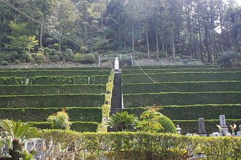
ここも山間部にあり、その名の通り滝がメインの寺だ。
茶畑かと思ったら段々墓地の植え込みでした。
その上にワイヤーが張られている。
詳しくは判らないが木を運ぶ索道なのだろうか。だとしたら墓地の上を伐採された木がゆらゆらと下りてくることになる。
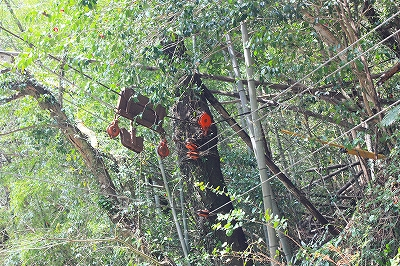
想像するだけで愉快な光景だ。
傾斜地にはたくさんの石仏がひしめいていてココのお寺を信仰する人の多さを示している。
明治25年に出来た寺というから120年近くの信仰の堆積といえよう。
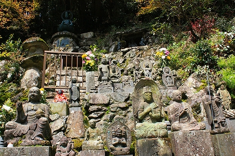
滝の下流の渓谷にかかる橋を渡る。
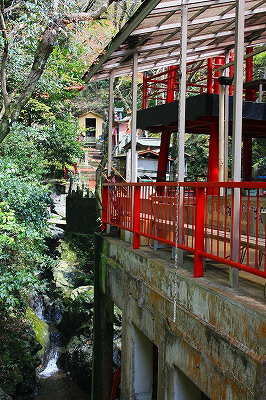
そこには川沿いの斜面にはりつくような建物がある。
滝や渓流を見下ろしながら食するトコロテンが名物、だそうで。
テラスの一角には金色のシールがたくさん貼られた仏像があった。
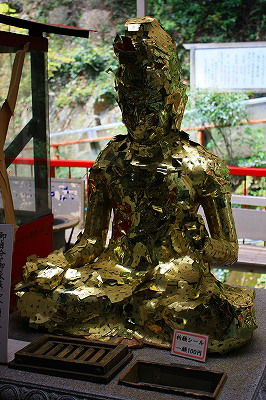
これは大分の熊野磨崖仏や椿大師でも見かけた参拝形式だ。
本来であれば金箔を貼るところを安価な金シールで済ませましょう、というもの。
先の2件は屋外だったので金色が退色して銀シールになっちゃっていたが、ここは屋根の下なので安心、安心。
私が確認していないだけでもしかしたら既に九州全域ではブラックモンブラン並みの超メジャーな参拝方法となっているのかもしれない。
ニットキャップにバンダナ。奉納者は20代の人だった。
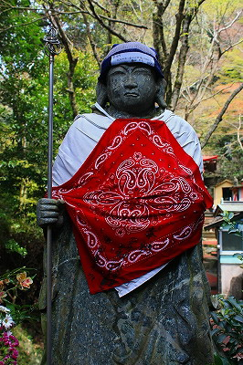
ここを訪れた数ヵ月後の7月に集中豪雨で篠栗一体は大変な被害を受けた。
中でもこの一ノ滝寺は本堂と庫裏が半壊、道路は寸断。住職はじめ近隣住民はヘリで救出されたのだという。
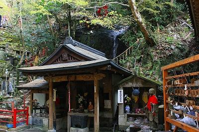 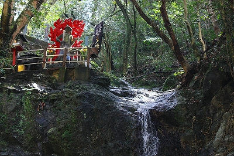
もちろんこれらの石仏も無事では済まなかったであろう。
したがって、現在は境内の様子は変わっているかもしれないことを念等においてご覧いただきたい。
先へ進むと峡谷状の境内にはたくさんの石像がひしめいている。
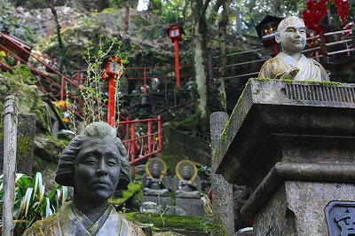
やけに立派な毘沙門サマの石像。踏まれている邪鬼の塩梅が堪らんですね。
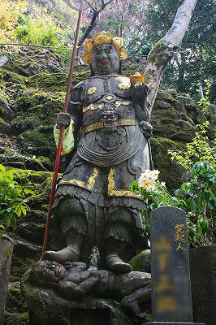
石像なれど要所を金ペイントで締めるこのセンスったら。
九州において石とペンキは切っても切れない間柄。
例えば不動サマを見たらファイアーパターンを赤くペイントせずにはいられない現象や墓石の文字を金色に塗らなければ落ち着かない現象(特に長崎あたり）、などなど。
また田の神さあやえびす様に代表されるようにホイホイペンキで石像を塗ってしまう習俗。
さらに遡ればチブサン古墳に代表される装飾古墳も九州にその分布が集中している。
これらの現象だけを取り上げて九州全体の文化や気質全体を語るつもりはないが、それでも私が見てきた限り、この地方は石材と彩色の関係性が非常に緊密であるといわざるをえまい。つまりよく石をペイントする御土地柄だってこと。
本州の感覚では石はそれだけで神性を持つ存在であり、おいそれと手出し出来ない物質の存在感を持っている。
例えば石が本尊になっている神社の本尊とかいきなりペイントしないっしょ。
一方、九州は日本の中でもとりわけ石造文化が盛んな御土地柄。
それは石仏や磨崖仏だけでなく、石橋などの石造構造物においても、だ。
そんな九州の「石」に対する親しみがペインテッドゴッドを大量に生み出しているのかもしれない。
もっとも本州にも化粧地蔵の習俗は広く分布しているのだから一概には言えないのだが。
さて、そんな赤塗り不動サマが林立する境内は橋の欄干やお堂の屋根、挙句の果てに通路までもが赤塗りなので目がチカチカしてくるぞ。
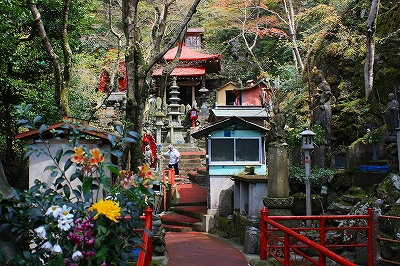 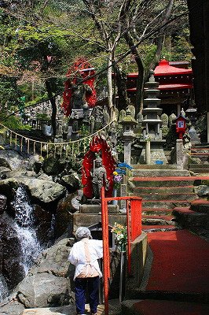
一体一体の石仏の間を縫うようにしてお賽銭を集めているおばあさんがいた。ご苦労様です。
規模の大小こそあれ八十八ヵ所巡りの必須アイテムに1円玉が挙げられる。
あちこちの路傍の石仏や数多くの札所、お寺によってはお砂踏みやミニ霊場などなど…とにかく賽銭をするスポットがたくさんあるのだ。
もちろんそれぞれに100円、10円、いや紙で出来たお金を賽銭として投入するリッチな方もいるかもしれないが、そこは庶民信仰ですから1円、5円をあげていくわけですよ。準備の良い人は巡礼に向けて日々1円玉や5円玉を貯めておくのだが、もちろん小銭を忘れてしまったり、途中で実弾が尽きてしまったりする人もいるわけでして…
集められた1円玉はこんな感じで両替用として再利用（という言い方は適切なのか?）される。
ミニ霊場とか移し霊場とかを参拝された経験のある人には判ると思うんですけど、本当にこの両替、助かるんですよねえ。
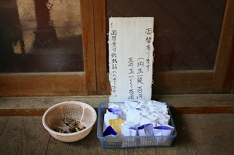
私も最初の札所ですでに小銭が尽きてしまい、賽銭箱があるたびに諭吉先生を投入していたので累計3億円ほど使ってしまい（嘘！）、やや財布の中身が心細くなっていたので有難く両替させてもらいました…
このおばあさんと参拝者がお賽銭というメディアを通して間接的な対話をしているように思えた。
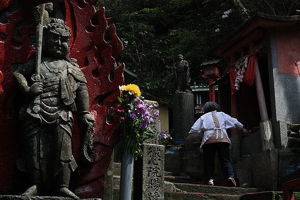
その対話の賜物がまた他の人に両替という形でバトンタッチされ、また新たなコミュニュケーションを生み出す構造になっている。
金は天下の回り物と言うが、別の意味で同じ1円玉が両替によって得た100円玉という価値を生みながらグルグル回っている図式が見えてくる。
お、ここにも金ペイント石仏が。
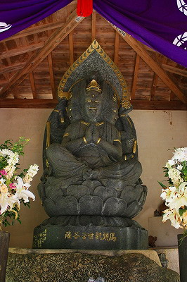
境内には大きなコンクリ不動サマも何体かおわす。もちろん見事に塗りまくり。
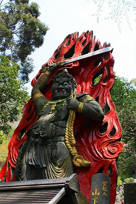 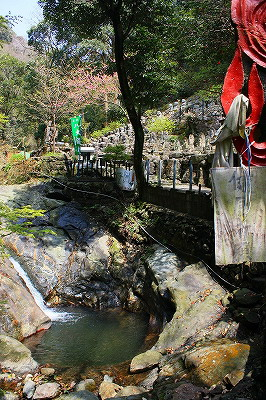
不動像の足元には小さな滝壺がある。露天風呂みたいな。
恐らくこんなこじんまりした場所も豪雨の際はとてつもなく荒々しい光景になったのだろう。
境内の一番奥には五百羅漢の石像がずらりと並ぶ。
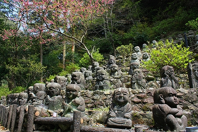 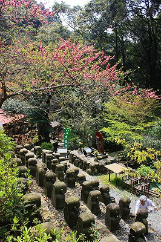
皆素人さんの手作りで一体一体微笑ましかったり下手だったり恐かったり。
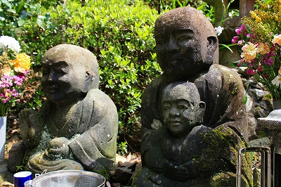 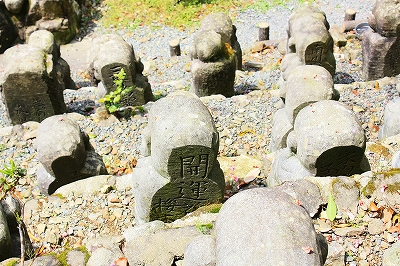
恐らく頭から彫りはじめるから顔の位置が前過ぎて側頭部が妙に間延びしたような羅漢さんが多い。
しかも裏は平ら。で、そのスペースに願い事が彫られていたりする。
もちろん基本的な造形に難アリの羅漢さんも多数。
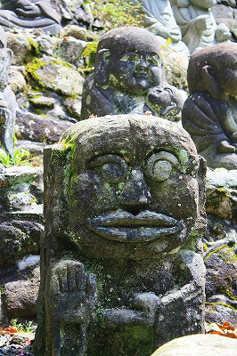 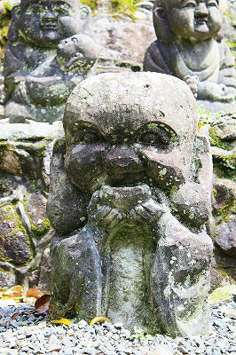
↑オマ、ドラ？
中には百萬円を数えてウッシッシ…の妙に生臭い羅漢さん。
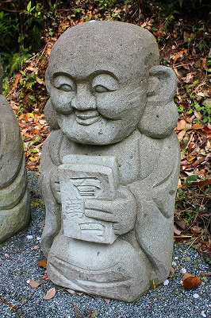
こっちはドーンと一億円！笑顔も格別！こうなれば生臭さも吹っ飛びますな！
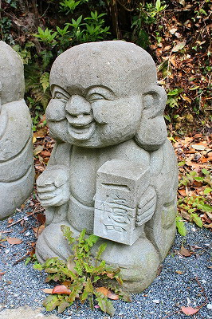
でも一億円ってこんなコンパクトじゃないっすよね？
ホラ、あれでしょ。サランラップでぐるぐる巻きのヤツ。最近ニュースでよく見るアレでしょ。
民間信仰の諸々を考えさせてくれる寺であった。
おまけ
この一ノ滝寺の手前に明王院という小さな番外霊場がある。
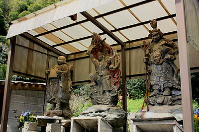
不動サマの石像を中心に数多くの石像が並んでいるのだが、全体的に造形がチョット…
江戸時代の錦絵の赤毛人みたいになっちゃってます。
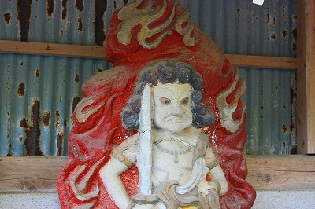
で、こちらは…
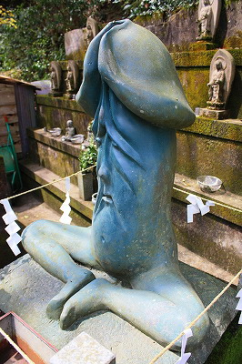
あえて何も言いますまい。コレを作った職人さんに同情申し上げるのみです。
次の霊場へトライアル！
珍寺的篠栗霊場巡りTOPへ
珍寺大道場 HOME